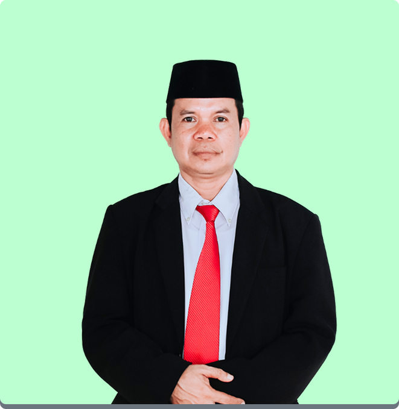
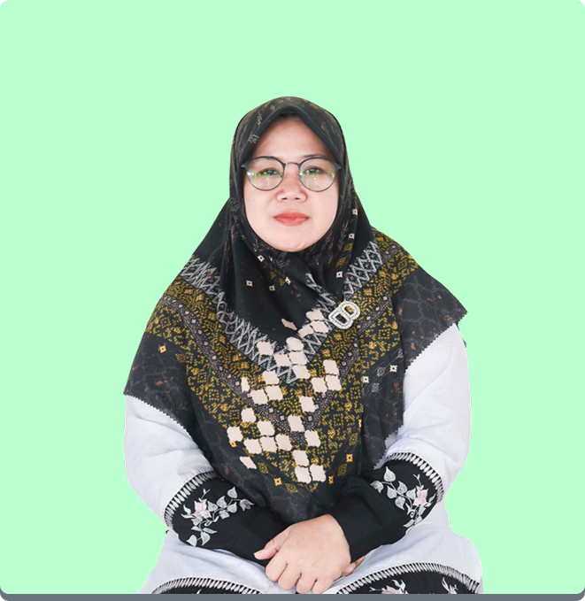

Tentang Kami

Yayasan Al Barkah Katimaha
Yayasan Al Barkah Katimaha adalah lembaga pendidikan dan sosial yang berkomitmen untuk membentuk generasi yang berakhlak mulia, cerdas, dan mandiri. Kami menyediakan layanan pendidikan dari tingkat dasar hingga menengah, serta berbagai kegiatan keagamaan dan sosial kemasyarakatan. Dengan semangat kebersamaan dan nilai-nilai keislaman, kami terus berupaya memberikan kontribusi nyata bagi masyarakat dan lingkungan sekitar.
Kepala Sekolah


Profil Pimpinan
Ust. Andri S.Pd
Kepala Sekolah SMPT Al Barkah Katimaha
Latar Belakang Pendidikan
- S1 Pendidikan Matematika, Universitas Negeri Jakarta (2005-2009)
- Program Kaderisasi Ulama, Pondok Pesantren Modern (2009-2011)
Pengalaman
- Kepala Sekolah SMPT Al Barkah Katimaha (2018-sekarang)
- Wakil Kepala Sekolah SMPT Al Barkah (2015-2018)
- Guru Matematika SMPT Al Barkah (2011-2015)
Visi Pendidikan
"Membangun generasi yang berakhlak mulia, berwawasan luas, dan berdaya saing global dengan tetap berpegang teguh pada nilai-nilai keislaman."
Pencapaian
- Pengembangan kurikulum terintegrasi ilmu umum dan agama
- Penghargaan Kepala Sekolah Berprestasi Tingkat Kabupaten (2020)
- Peningkatan prestasi akademik siswa dengan kelulusan 100% selama 5 tahun berturut-turut
Kontak
Email: ust.andri@albarkahkatimaha.sch.id
Telepon: 0821-xxxx-xxxx